家庭成员维护
“成员列表”是列表节点，单击“成员列表”打开列表，如下图所示
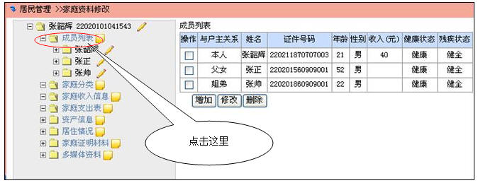
单击“增加”可以增加一个新成员，选中一个成员（选中成员前的选择框）后可以修改、删除，增加成员和修改成员的界面相同，如下所示
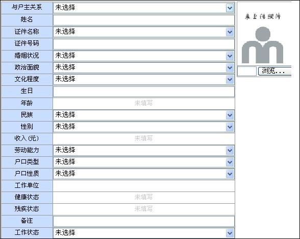
填写相对应的信息，点击“保存”按钮,完成操作。
注：可以展开家庭下面的成员列表，单击再点击成员后面的图标对该成员进行修改，如下图所示
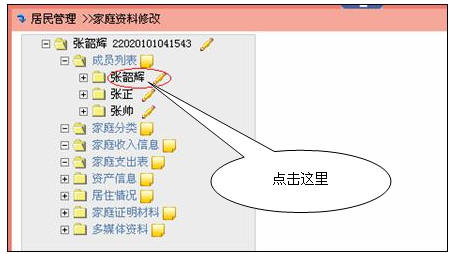
(7)患病及医疗情况
展开一个家庭成员,点击“患病及医疗情况”，进入患病及医疗情况维护页面,如下所示
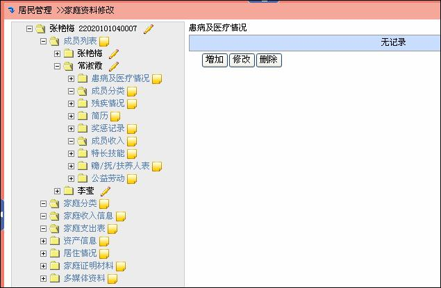
这里操作与维护成员信息操作类似,可以进行增加、修改、删除操作，填写界面如下所示
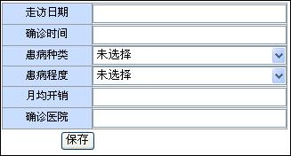
(8)成员分类
成员分类是由系统管理员在后台设定的，通过分析成员信息计算得出，当成员信息维护完成时，点击“成员分类 ”，系统会计算出当前成员分类。
”，系统会计算出当前成员分类。
当分类信息计算得出后，录入人员需要对得出分类进行确认，只有确认后分类信息，才能用于统计。
点击“ ”后，显示“
”后，显示“ ”表示该分类确认。如果该家庭分类已确认，点击图标“
”表示该分类确认。如果该家庭分类已确认，点击图标“ ”后，图标改变为“
”后，图标改变为“ ”此时这个家庭分类状态未确认。
”此时这个家庭分类状态未确认。
如果成员信息发生改变应点击成员分类重新计算分类信息。
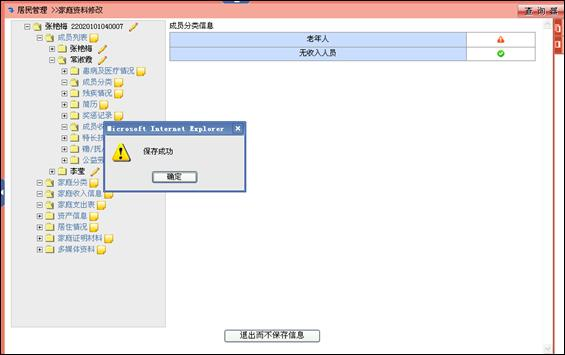
(9)残疾情况
与“患病及医疗情况”操作类似，填写界面如下所示
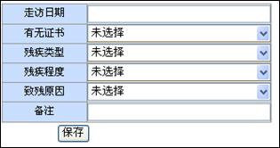
(10)
简历
与“患病及医疗情况”操作类似，填写界面如下所示
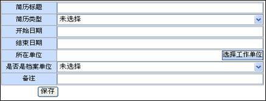
点击“选择工作单位”按钮，弹出选择单位窗口，如下所示
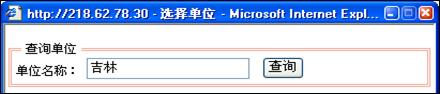
在“单位名称”支持模糊查询，可以查询出相似的工作单位，选择单位后关闭对话框，如下所示
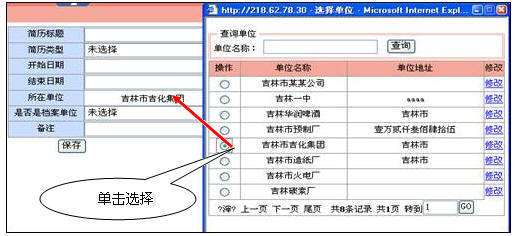
若列表中没有需要的单位，则在“单位名称”中填写该单位名称，然后点击“查询”按钮，弹出“添加新单位”对话框，如下所示
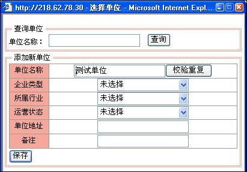
填写信息单位信息，按“保存”按钮关闭该对话框，新增单位会出现在单位选择对话框中。
(11)
奖惩记录
与“患病及医疗情况”操作类似，填写界面如下所示
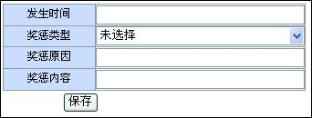
(12)
成员收入
单击“成员收入”，打开成员收入，如下所示
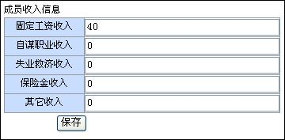
输入各项收入后按“保存”按钮保存，同时系统自动计算该成员总收入及该家庭总收入。
(13)
特长技能
与“患病及医疗情况”操作类似，填写界面如下所示
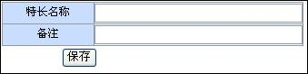
(14)
赡/扶/抚养人记录
与“患病及医疗情况”操作类似，填写界面如下所示
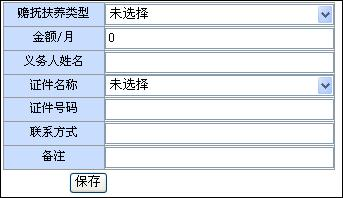
(15)
公益劳动
与“患病及医疗情况”操作类似，填写界面如下所示
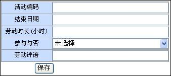